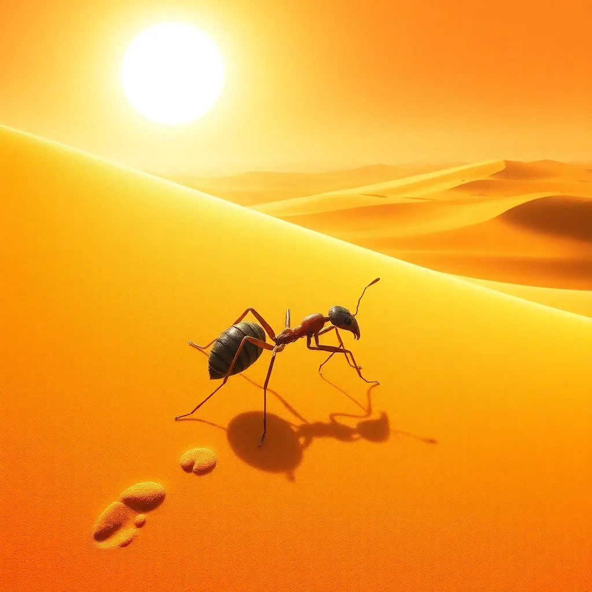
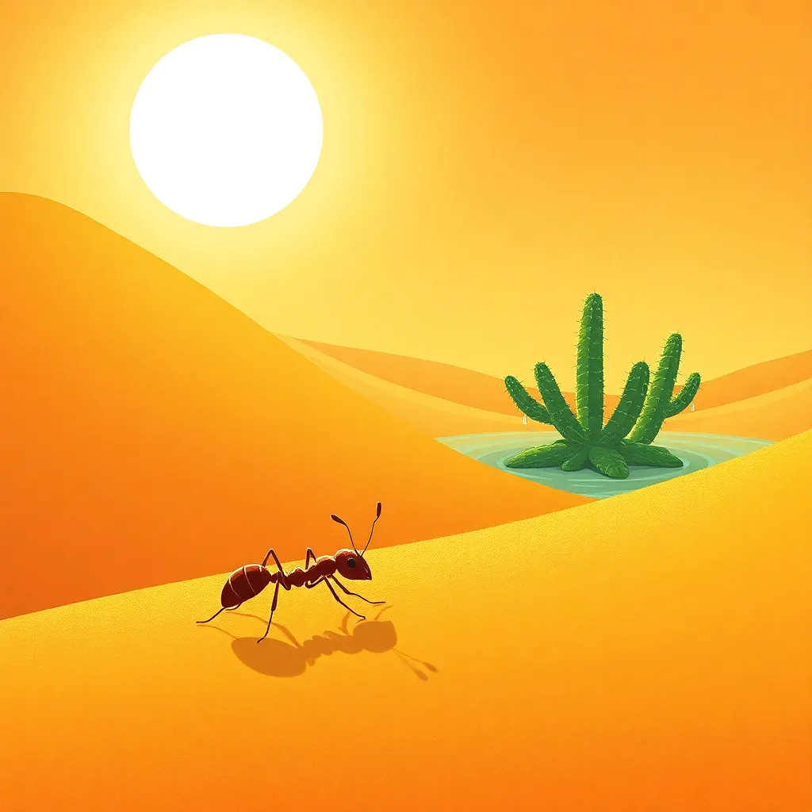
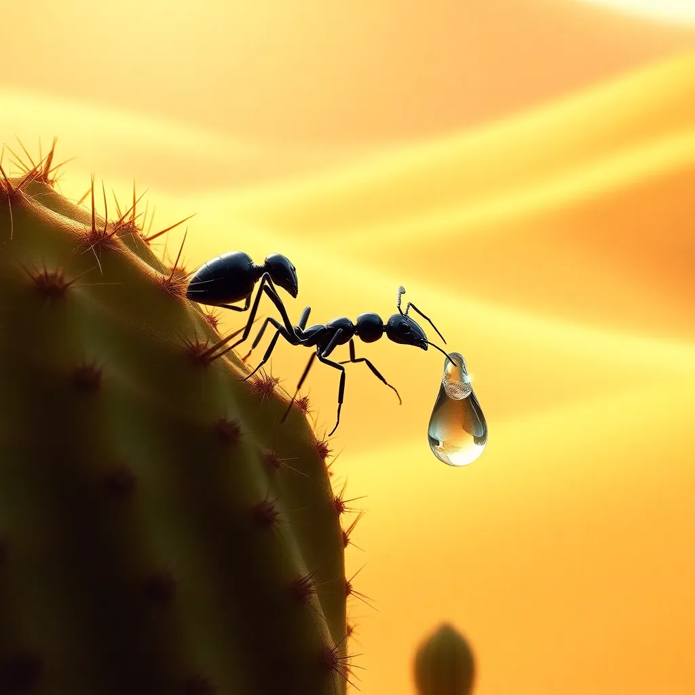
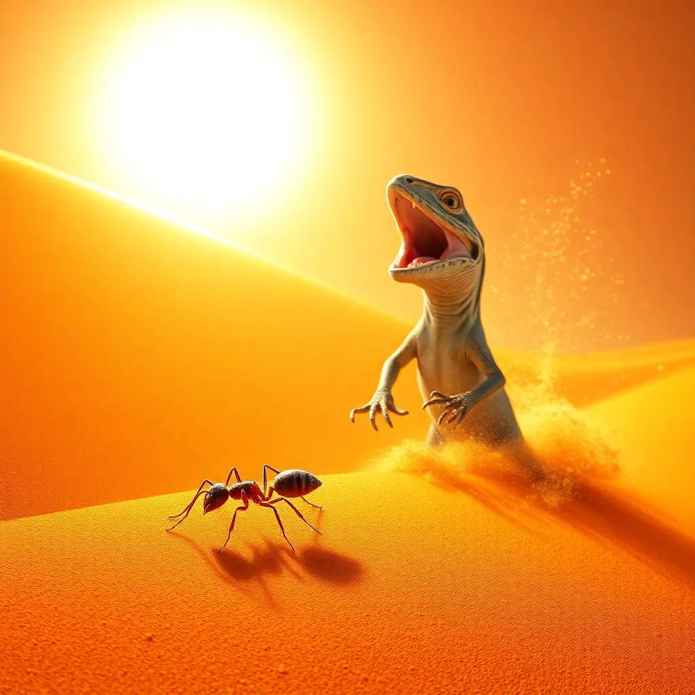
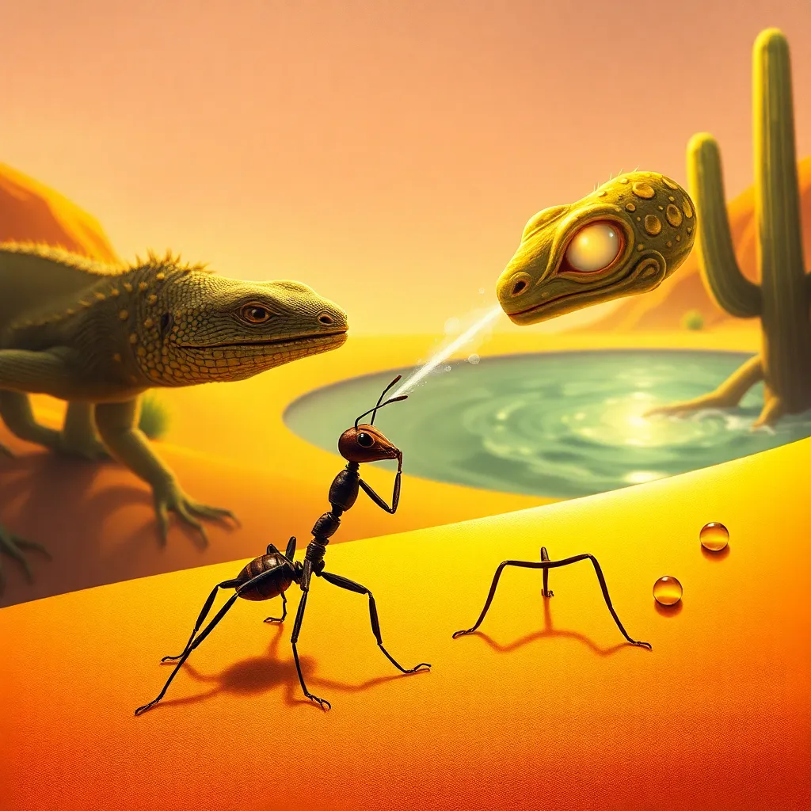
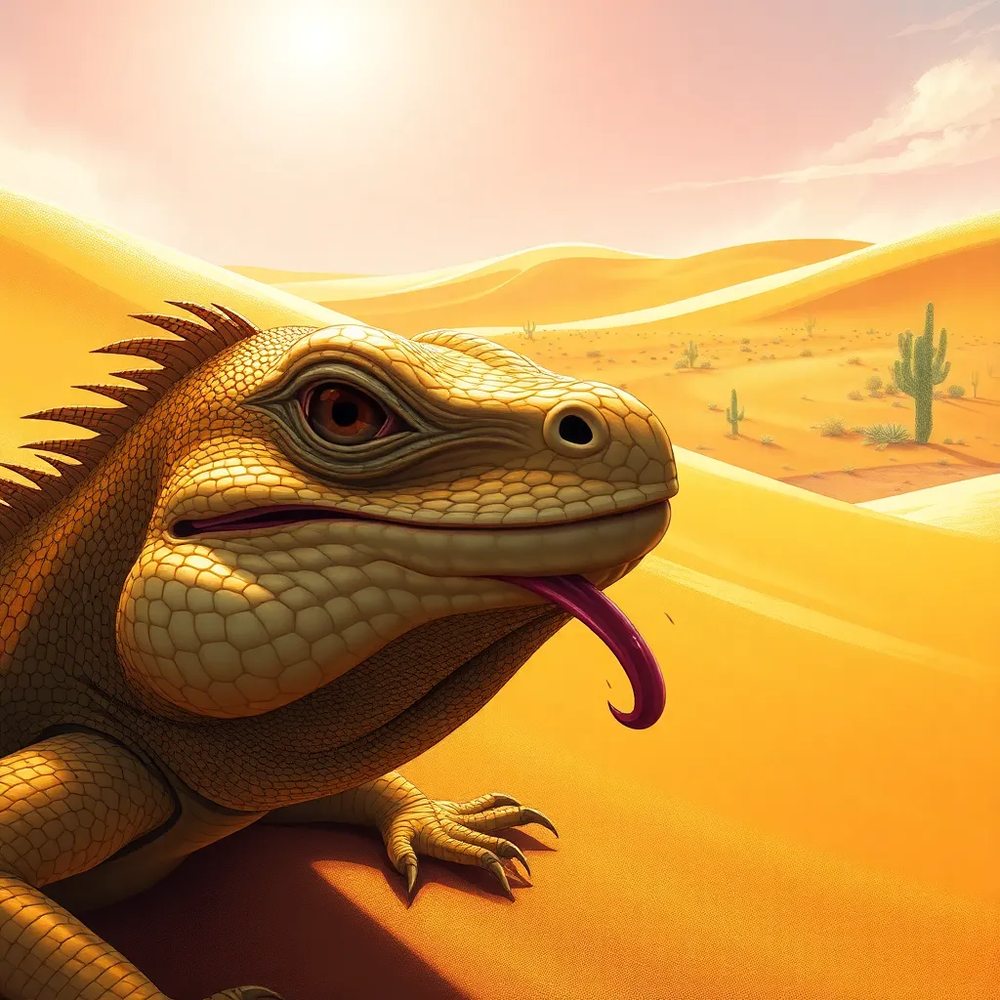
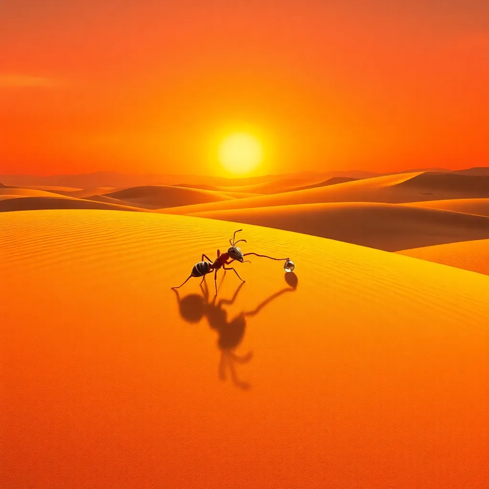

Generated Images
Theme: 沙漠里的蚂蚁

Prompt 1:
**Prompt:** A vast desert under a blazing sun, golden sand dunes stretching endlessly. A small worker ant emerges from a tiny nest in the sand, its glossy black body glinting in the sunlight. Its antennae twitch delicately, sensing faint traces of moisture in the dry air. The scene is detailed and realistic, with a warm, golden color palette and a mood of quiet determination. The ant's small size contrasts with the vast, unforgiving desert.

Prompt 2:
**Prompt:** A worker ant trudges across scorching golden sand dunes under a blazing sun, its shriveled abdomen showing signs of dehydration. Tiny footprints trail behind it as it moves with determination. The dunes stretch endlessly like waves, creating a vast, unforgiving desert landscape. The scene is rendered in a realistic style with warm, golden tones, emphasizing the harsh, arid environment and the ant's resilience. Mood: intense, desolate, yet hopeful.

Prompt 3:
**Prompt:** A tiny worker ant scurries across golden sand dunes under a blazing sun, its antennae twitching as it detects a new scent. In the distance, a small oasis emerges, with a cluster of resilient cacti swaying gently in the breeze. Droplets of water glisten on their spiny leaves, catching the sunlight. The scene radiates hope and relief, rendered in a warm, textured art style with soft lighting and vibrant desert hues. Mood: tense yet hopeful.

Prompt 4:
**Prompt:** A lone worker ant, its glossy black exoskeleton glinting under the harsh desert sun, climbs a resilient cactus in a small oasis. Its delicate antennae touch a glistening water droplet, reflecting the golden dunes in the background. The ant’s mandibles are poised to collect the precious water, its tiny body tense with focus. Warm, golden tones dominate the scene, with soft shadows and a hopeful, determined mood. Realistic style with intricate details.

Prompt 5:
**Prompt:** A worker ant stands on golden desert sand dunes under a blazing sun, its tiny body casting a long shadow. Suddenly, a lizard erupts from the sand, its scales glinting in the harsh light, jaws wide open and teeth bared. The ant freezes, its antennae twitching in alarm, as grains of sand cascade around the lizard's menacing form. The scene is rendered in a realistic, high-detail style, with a tense, dramatic mood emphasizing the ant's vulnerability.

Prompt 6:
**Prompt:** A brave worker ant stands defiant on golden desert sand, facing a menacing lizard with shimmering scales. The ant sprays a mist of formic acid toward the lizard's glowing, narrowed eyes. The oasis glimmers faintly in the background, with resilient cacti and droplets of water catching the sunlight. The scene is intense and dramatic, rendered in a semi-realistic style with warm, earthy tones and sharp contrasts, emphasizing the ant's courage and the harsh desert environment.

Prompt 7:
**Prompt:** A close-up of a desert lizard, its scales glinting under the harsh sun, recoiling in pain as it shakes its head violently. Its eyes are wide with shock, and its tongue flickers in distress. The golden sand dunes stretch endlessly in the background, with a small oasis of cacti visible in the distance. The mood is tense and dramatic, with a realistic art style emphasizing the textures of the lizard's skin and the shimmering heat waves.

Prompt 8:
**Prompt:** A lone worker ant trudges across golden sand dunes under a blazing sunset, carrying a droplet of water in its mandibles. Its long shadow stretches across the rippled desert, emphasizing its small but determined form. The vast, empty landscape contrasts with the ant's resilience, as the sun dips below the horizon, painting the sky in warm oranges and purples. Realistic style, emphasizing texture and light, with a mood of quiet triumph and perseverance.